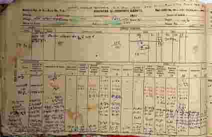

बिहार में जमीन के किसी भी लेन-देन, नापी या मालिकाना हक को साबित करने के लिए जमाबंदी (Jamabandi) सबसे आधारभूत दस्तावेज है। इसे 'रजिस्टर-2' (Register-II) भी कहा जाता है। यदि आपकी जमीन की जमाबंदी ऑनलाइन नहीं है या उसमें कोई गलती है, तो भविष्य में आपको जमीन बेचने या उस पर लोन लेने में गंभीर समस्या आ सकती है। इस 5000+ शब्दों के विस्तृत लेख में हम जमाबंदी की हर बारीकी को समझेंगे।

फोटो: बिहार भूमि पोर्टल पर अपनी जमाबंदी देखने की प्रक्रिया
जमाबंदी अंचल कार्यालय (Block Office) के रिकॉर्ड रूम में रखे जाने वाला वह रजिस्टर है, जिसमें गाँव के हर रैयत (जमीन मालिक) का विस्तृत विवरण होता है। इसमें जमीन का खाता नंबर, खेसरा (प्लॉट) नंबर, रकबा (क्षेत्रफल), जमीन की चौहद्दी, और सालाना लगान (टैक्स) दर्ज होता है। सरल शब्दों में, यह जमीन का "Passbook" है जो बताता है कि सरकार के खाते में इस जमीन का वर्तमान मालिक कौन है।
बिहार सरकार ने 'बिहार भूमि' (Bihar Bhumi) पोर्टल के माध्यम से डिजिटल रिकॉर्ड उपलब्ध कराए हैं। नीचे दी गई प्रक्रिया का पालन करें:
सबसे पहले biharbhumi.bihar.gov.in पर जाएं। वहाँ "जमाबंदी पंजी देखें" (View Jamabandi Register) के विकल्प पर क्लिक करें।
अपना जिला और अंचल चुनें और "Proceed" पर क्लिक करें। इसके बाद अपने मौजा (गाँव) का चयन करें।
आप अपनी जमाबंदी को कई तरीकों से खोज सकते हैं:
1. भाग वर्तमान और पृष्ठ संख्या द्वारा (यदि पता हो)।
2. रैयत के नाम से।
3. खाता नंबर या प्लॉट नंबर से।
4. जमाबंदी संख्या से।
अक्सर देखा गया है कि डिजिटल रिकॉर्ड में कई गलतियाँ रह गई हैं। जैसे:
• नाम की स्पेलिंग गलत होना।
• रकबा (क्षेत्रफल) कम दिखना।
• खाता या खेसरा नंबर में त्रुटि।
• जमाबंदी का ऑनलाइन पोर्टल पर न दिखना।
इन गलतियों को सुधारने के लिए बिहार सरकार ने 'परिमार्जन' (Parimarjan Plus) पोर्टल शुरू किया है। यहाँ आप शपथ पत्र और साक्ष्य (पुराना केवाला या खतियान) अपलोड करके ऑनलाइन सुधार के लिए आवेदन कर सकते हैं।
| विशेषता | खतियान (Khatiyan) | जमाबंदी (Jamabandi) |
|---|---|---|
| प्रकृति | यह सर्वे के समय बनने वाला मूल दस्तावेज है। | यह वर्तमान मालिकाना हक को दर्शाता है। |
| बदलाव | इसे बार-बार नहीं बदला जाता (नया सर्वे आने तक)। | जमीन की हर खरीद-बिक्री के बाद यह अपडेट होता है। |
| महत्व | जमीन की वंशावली और जड़ जानने के लिए। | सरकारी रसीद कटाने और कब्जे के लिए। |
A: यह एक गंभीर मामला है। आपको तुरंत अंचल अधिकारी (CO) के पास "जमाबंदी रद्दीकरण" (Jamabandi Cancellation) के लिए वाद दायर करना चाहिए। यदि वहाँ से न्याय न मिले, तो ADM कोर्ट या टाइटिल सूट (Civil Court) का सहारा लेना होगा।
A: कानूनी रूप से नहीं, लेकिन रिकॉर्ड की त्रुटि के कारण ऐसा हो सकता है। इसे "Double Jamabandi" कहते हैं। इसके निराकरण के लिए साक्ष्यों के साथ राजस्व न्यायालय (RCMS) में अपील करनी पड़ती है।
घबराएं नहीं! हमारे एक्सपर्ट्स आपके पुराने रिकॉर्ड्स (खतियान और केवाला) को खोजकर उन्हें ऑनलाइन चढ़ाने और सुधारने में आपकी मदद करेंगे।
एक्सपर्ट सहायता प्राप्त करेंडिजिटल इंडिया के दौर में अपनी जमीन की जमाबंदी को ऑनलाइन और त्रुटिमुक्त रखना आपकी जिम्मेदारी है। यह न केवल आपकी संपत्ति को भू-माफियाओं से बचाता है, बल्कि भविष्य की पीढ़ियों के लिए रास्ता आसान बनाता है। यदि आपको अपनी जमाबंदी का भाग वर्तमान या पृष्ठ संख्या ढूंढने में दिक्कत आ रही है, तो आज ही Jameen Seva की टीम से संपर्क करें।
Bihar Survey 2026 ke liye Amin dwara verified formats niche se download karein.
₹49
MRP: ₹499
₹149
🔒 Instant Download After Payment